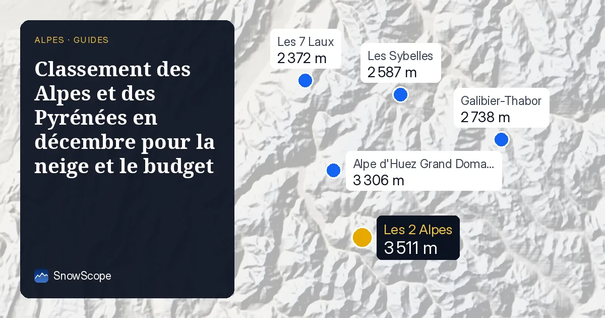

Classement des Alpes et des Pyrénées en décembre pour la neige et le budget
Les stations frontalières françaises et italiennes dominent notre classement de décembre 2026 pour les voyages à petit prix. Les 2 Alpes arrive en tête avec 75 cm à mi-montagne en décembre habituel et un forfait 6 jours à 266,50 EUR, tandis que Livigno facture 258,50 EUR avant le 18 décembre. Les zones pyrénéennes ferment la marche avec peu de neige et des forfaits qui ne sont pas une affaire.
Consultez les prévisions neige en temps réel pour Les 2 Alpes sur l'application SnowScopeHauteurs de neige, alertes poudreuse et carte 3D, gratuitement.
Comment nous avons comparé les dix domaines skiables
Nous avons classé dix stations en France, Suisse, Italie, Andorre et Espagne en utilisant notre historique de neige de 46 hivers passés. Chaque station est vérifiée au bas des remontées, à mi-montagne et au sommet, ainsi que ses pistes et remontées cartographiées. Les prix des forfaits proviennent de chaque site officiel pour 2026-27, sauf pour La Thuile, où aucun prix n'a été vérifié sur le site officiel. Les chiffres de neige divisent les dix stations en trois groupes clairs.

Leaders enneigés et poches frontalières
Les 2 Alpes est en tête de notre tableau avec un domaine skiable de 108 km de pistes et 46 remontées atteignant 3 511 m. Sa base à 1 284 m est fine, avec 16 cm en moyenne (0 cm au plus bas, 39 cm au plus haut) et atteint 30 cm ou plus dans 2 % des hivers passés entre le 1er et le 7 décembre et 37 % entre le 22 et le 28 décembre. Séjournez à mi-montagne (2 397 m), qui compte 75 cm en moyenne (30 cm au plus bas, 140 cm au plus haut) et atteint 50 cm ou plus dans 46 % des hivers passés entre le 1er et le 7 décembre, 72 % entre le 8 et le 14 décembre, 87 % entre le 15 et le 21 décembre et 91 % entre le 22 et le 28 décembre, tandis que le sommet à 3 511 m affiche 176 cm en moyenne (72 cm au plus bas, 302 cm au plus haut). Les forfaits coûtent 68,00 EUR pour un ticket 1 jour flexible, 266,50 EUR pour 6 jours, ou 42 EUR par jour les 28-29 novembre 2026 ; la neige à mi-montagne est passée de 63 cm lors des 15 premiers hivers à 77 cm lors des 15 derniers hivers.
Saas-Fee (48 km de pistes, 30 remontées) atteint 3 556 m avec 68 cm habituels à mi-montagne (2 668 m ; 31 cm au plus bas, 113 cm au plus haut ; en baisse de 70 cm à 63 cm), bien que les forfaits coûtent CHF 86 pour 1 jour et CHF 419 pour 6 jours. Côté neige, deux stations frontalières se distinguent : Montgenèvre (62 km, 24 remontées) et La Thuile (79 km, 17 remontées). Montgenèvre compte 56 cm en moyenne à sa base de 1 795 m (22 cm au plus bas, 102 cm au plus haut) et atteint 30 cm ou plus dans 89 % des hivers passés d'ici le 15-21 décembre ; la mi-montagne est passée de 49 cm lors des 15 premiers hivers à 76 cm lors des 15 derniers hivers, et un forfait 1 jour coûte 45,50 EUR jusqu'au 18 décembre 2026 (56,00 EUR à partir du 19 décembre, ou 301,00 EUR pour 6 jours en haute saison). La Thuile compte 44 cm en moyenne à sa base de 1 468 m (17 cm au plus bas, 92 cm au plus haut) et 67 cm à mi-montagne, passant de 64 cm à 73 cm.
Bon rapport qualité-prix pour la mi-décembre
Valloire-Valmeinier et Vars-Risoul ont toutes deux 131 km de pistes à des prix français moyens. Valloire-Valmeinier (34 remontées, sommet à 2 738 m) coûte 54,90 EUR pour 1 jour, 278,50 EUR pour 6 jours, ou 20 EUR les 5-6 décembre 2026 avec accès à la patinoire. Sa base à 1 406 m compte 29 cm en moyenne (12 cm au plus bas, 58 cm au plus haut), tandis que la mi-montagne (2 072 m) compte 66 cm en moyenne (31 cm au plus bas, 120 cm au plus haut ; passant de 55 cm lors des 15 premiers hivers à 69 cm lors des 15 derniers hivers) et atteint 50 cm ou plus dans 43 % des hivers passés entre le 1er et le 7 décembre, 67 % entre le 8 et le 14 décembre, 80 % entre le 15 et le 21 décembre et 87 % entre le 22 et le 28 décembre. Vars-Risoul (38 remontées, sommet à 2 722 m) facture 58 EUR pour 1 jour et 298 EUR pour 6 jours, avec 51 cm habituels à mi-montagne (20 cm au plus bas, 97 cm au plus haut ; en hausse de 42 cm à 62 cm).
En Italie, Livigno (83 km, 37 remontées) propose le forfait 6 jours le moins cher à 258,50 EUR du 28 novembre au 18 décembre 2026 (51,50 EUR par jour ensuite, 66,00 EUR du 19 au 25 décembre, 74,50 EUR à partir du 26 décembre). Sa base à 1 811 m compte 28 cm en moyenne (6 cm au plus bas, 60 cm au plus haut) et la mi-montagne (2 301 m) compte 48 cm en moyenne (passant de 39 cm lors des 15 premiers hivers à 52 cm lors des 15 derniers hivers), donc restez sur le sommet à 2 791 m (85 cm habituels). Pila (56 km, 16 remontées) facture 60,00 EUR pour 1 jour et 322,00 EUR pour 6 jours, avec 45 cm en moyenne à mi-montagne (passant de 42 cm à 49 cm) et 80 cm à 2 723 m.
Pyrénées : peu de neige, pas de vrai avantage de prix
Grandvalira (137 km de pistes, 53 remontées) et Baqueira Beret (154 km, 36 remontées) ont de grands domaines, mais la neige de décembre est rare et les forfaits ne sont pas moins chers que la plupart des stations alpines de la liste. La base de 1 674 m de Grandvalira compte 9 cm en moyenne (0 cm au plus bas, 28 cm au plus haut) et atteint 30 cm ou plus dans seulement 7 % des hivers passés à partir du 8-14 décembre. La mi-montagne (2 146 m) compte 27 cm en moyenne (2 cm au plus bas, 63 cm au plus haut ; passant de 21 cm à 25 cm), tandis que le sommet à 2 619 m compte 45 cm en moyenne. Son forfait 1 jour pour le lundi 14 décembre 2026 est à 62,50 EUR en ligne ou 72,00 EUR au guichet.
Baqueira Beret compte 8 cm en moyenne à sa base de 1 504 m (0 cm au plus bas, 37 cm au plus haut), 20 cm à mi-montagne (2 cm au plus bas, 56 cm au plus haut ; passant de 17 cm à 20 cm) et 30 cm à son sommet à 2 600 m, atteignant 30 cm ou plus dans 39 % des hivers passés entre le 1er et le 7 décembre et 59 % entre le 22 et le 28 décembre. Les forfaits coûtent 74,00 € pour 1 jour (70,00 € avec la carte rechargeable) ou 359,00 € pour 6 jours.
Choisir votre semaine et votre altitude
Pour début décembre avec un budget serré, réservez Livigno avant le 18 décembre à 258,50 EUR pour 6 jours et skiez sur ses remontées supérieures, ou choisissez Montgenèvre à 45,50 EUR par jour avec une base solide à 1 795 m. Pour le 15-21 décembre ou le 22-28 décembre, Les 2 Alpes (266,50 EUR pour 6 jours) et Valloire-Valmeinier (278,50 EUR) offrent une neige plus profonde à mi-montagne pour moins cher que Saas-Fee.
Conseils aux skieurs
- Choisissez le 15-21 décembre ou le 22-28 décembre pour skier à mi-montagne : Valloire-Valmeinier passe de 43 % des hivers passés avec 50 cm ou plus entre le 1er et le 7 décembre à 80 % et 87 % plus tard dans le mois.
- Skiez à mi-montagne (2 397 m) ou plus haut aux Les 2 Alpes en décembre, car sa base à 1 284 m ne compte que 16 cm en moyenne.
- Verrouillez les forfaits promotionnels sur le site officiel avant le 18 décembre 2026 à Montgenèvre (45,50 EUR par jour) ou Livigno (258,50 EUR pour 6 jours), et achetez les forfaits Grandvalira en ligne (62,50 EUR) au lieu du guichet (72,00 EUR).
- Vérifiez la bulletin d'avalanche local avant de partir hors-piste sur des pentes hautes et chargées par le vent.
Autres cartes (sites externes)
Références et crédits
- Les 2 Alpes, official ski pass shop, prices 2026-27 www.skipass-2alpes.com/en/pricing
- Les 2 Alpes, official ski pass shop, opening weekend offer www.skipass-2alpes.com/fr/forfaits/ski
- Saas-Fee/Saastal, official ski pass prices 2026-27 www.saas-fee.ch/en/winter-in-the-saas-valley/ski-pass-prices/saas-fee
- Valloire, official ski pass shop (Galibier-Thabor), winter 2026-27 skipass.valloire.com/fr/
- Montgenèvre, official ski pass prices 2026-27 skipass.montgenevre.com/fr/tarifs-guichet
- Livigno, official ski pass price list 2026-27 (PDF) www.livigno.eu/hubfs/tariffe_26-27.pdf
- Pila, official daily ski pass prices 2026-27 pila.it/en/skipass-pila/daily-skipass/
- Risoul, official ski pass page, Forêt Blanche 2026-27 risoul.labellemontagne.com/fr/hiver/forfaits/risoul-foret-blanche/
- Risoul, official 6-day Forêt Blanche pass page 2026-27 risoul.labellemontagne.com/fr/hiver/forfaits/6-jours-foret-blanche/
- Grandvalira, official ski pass booking (online price for 14 December 2026, read 2026-11-13) www.grandvalira.com/en/ski-pass/day
- Baqueira Beret, official prices (tarifas), season 26-27 www.baqueira.es/es/tarifas
- SnowScope, December snow at three heights and today's snow map snowscope.app/
À propos de ces chiffres
Chiffres de neige : historique SnowScope, 46 hivers passés (1980-81 à 2025-26) à trois altitudes de chaque station (un modèle du passé corrigé de l'altitude : une estimation pour une zone, pas des mesures de la station) ; chiffres de décembre calculés à partir des hauteurs quotidiennes de ces hivers. Neige actuelle et tendance à deux semaines : prévisions SnowScope (tendance ECMWF et GFS, une fourchette, pas une promesse). Remontées et pistes : cartographie OpenSkiMap. Prix : pages officielles des stations ci-dessous, lues le 2026-11-13 ; les prix peuvent changer, vérifiez avant de réserver.
Citer ce bulletin
Pour la recherche, l'enseignement ou la presse : chiffres et graphiques réutilisables librement sous CC BY 4.0 avec cette citation.
SnowScope (2026), Classement des Alpes et des Pyrénées en décembre pour la neige et le budget, https://snowscope.app/blog/fr/2026/11/western-europe-december-ski-budget-10-resorts-compared-2026.html, consulté le 2026-11-14
SnowScope (Atlas Labs). (2026, November 14). Classement des Alpes et des Pyrénées en décembre pour la neige et le budget. SnowScope snow reports. https://snowscope.app/blog/fr/2026/11/western-europe-december-ski-budget-10-resorts-compared-2026.html
BibTeX
@misc{snowscope2026westerneuropedecemberski,
author = {{SnowScope (Atlas Labs)}},
title = {Classement des Alpes et des Pyrénées en décembre pour la neige et le budget},
year = {2026},
month = nov,
howpublished = {\url{https://snowscope.app/blog/fr/2026/11/western-europe-december-ski-budget-10-resorts-compared-2026.html}},
note = {Published 2026-11-14 20:11 UTC; accessed 2026-11-14}
}· CC BY 4.0 · Méthodes, données et outils →
Les 2 Alpes : neige et température selon l'altitude, cet hiver vs l'hiver dernier (outils) →
Suivre Les 2 Alpes
Gratuit : un message quand la neige arrive, et la météo chaque matin.
Autres bulletins neige

Pila, au-dessus d'Aoste, combine un forfait journée fixe à 60,00 EUR et une neige fiable en décembre sur ses pistes d'altitude.

Montgenèvre affiche 56 cm de neige habituelle en décembre à son pied de station, offrant aux skieurs du week-end une meilleure couverture précoce que Sestriere, de l'autre côté de la frontière.

Skiez à Livigno pour 51,50 EUR par jour avant le 18 décembre, quand la neige au sommet atteint 30 cm dans 100 % des hivers passés.